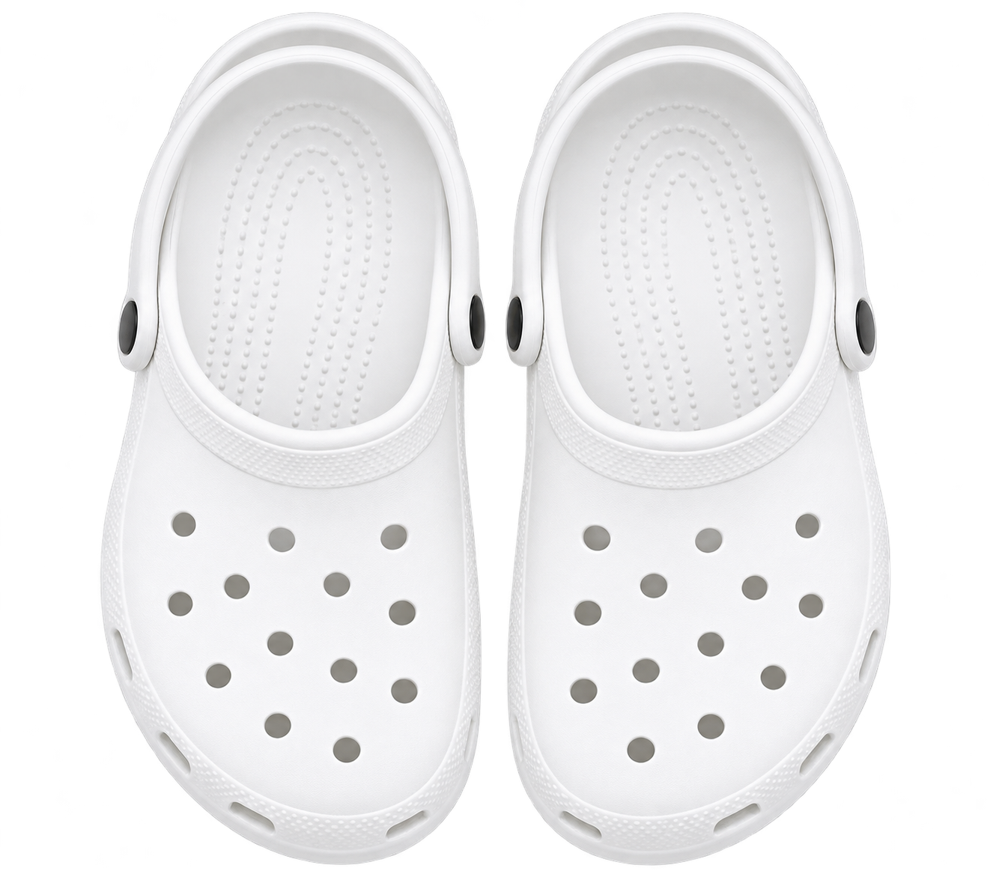

跳至主要內容
ABOUT
COLLECTION
OUR STORY
BRAND EXTRAS
← BACK HOME
PIKO / INTERACTIVE EXPERIMENT
STYLE YOUR
OCEAN.
先選鞋色，再選鞋扣，點選鞋面孔位放置；桌面也可將鞋扣拖曳到孔位。
YOUR CANVAS / TWO SHOES
RESET ↺

DRAG A CHARM TO A HOLE · OR TAP CHARM → TAP HOLE
 ← BACK HOME
← BACK HOME